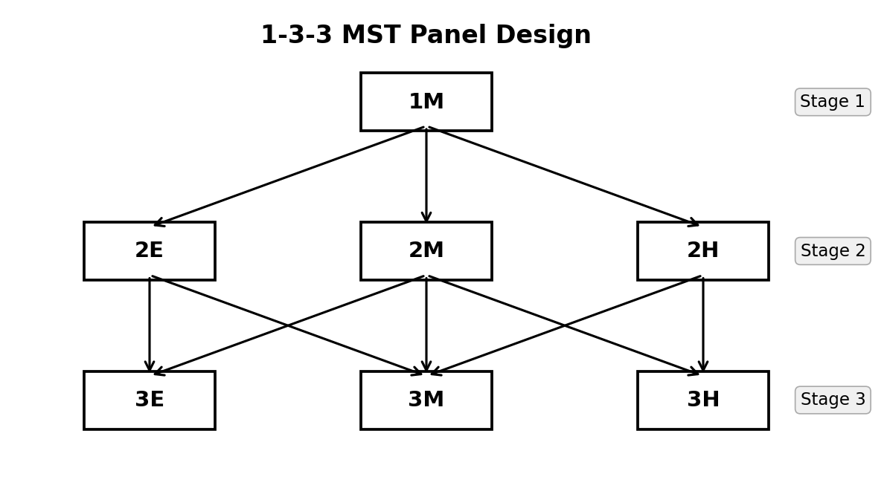
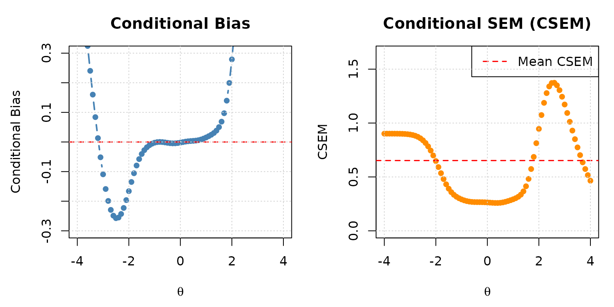
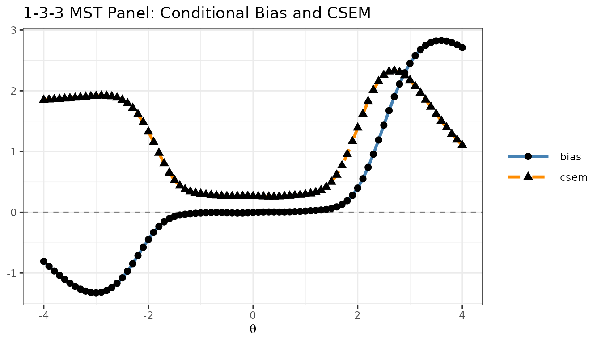
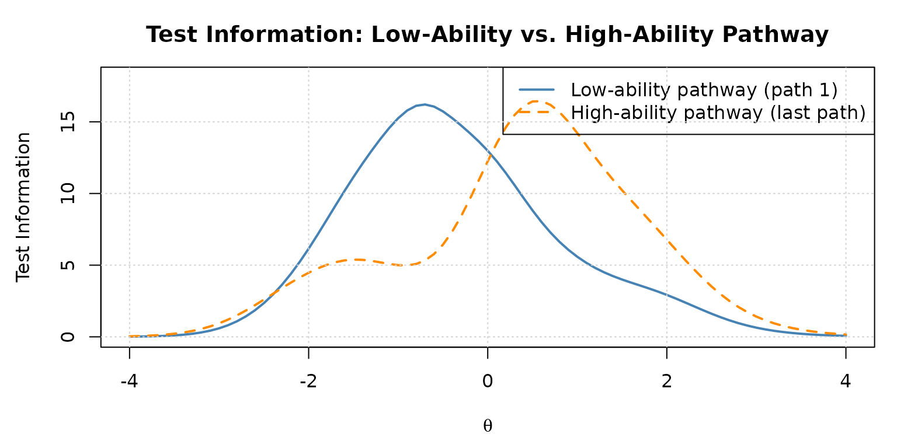
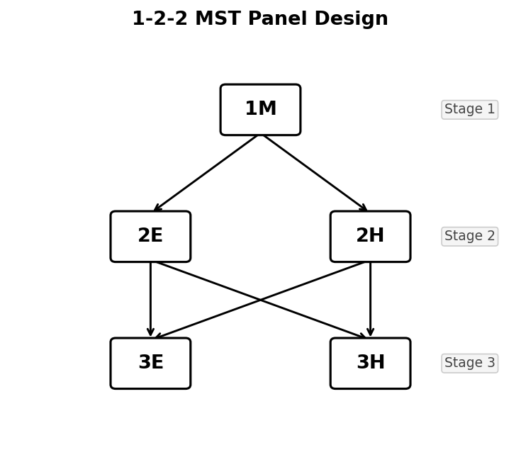
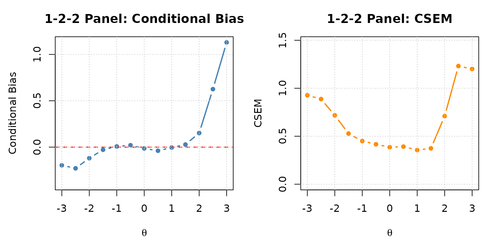
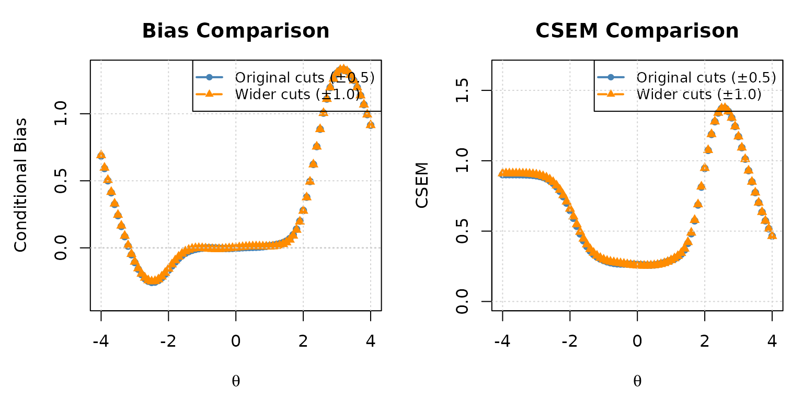

Evaluating MST Panels with reval_mst()
Source:vignettes/articles/mst-panel-evaluation.Rmd
mst-panel-evaluation.RmdWhat is Multistage Testing (MST)?
Multistage Testing (MST) is a computer-based adaptive testing design that sits between fully adaptive Computerized Adaptive Testing (CAT) and traditional linear fixed-form testing. In an MST, the test is divided into stages, each containing one or more pre-assembled groups of items called modules. Routing rules — based on performance on earlier stages — determine which module a test taker receives at each subsequent stage.
The Basic Structure
A typical MST panel is described by its stage-module configuration. For example, a 1-3-3 panel has:
- Stage 1: 1 routing module — everyone starts with the same items
- Stage 2: 3 modules of varying difficulty (e.g., easy, medium, hard)
- Stage 3: 3 modules of varying difficulty (e.g., easy, medium, hard)
The diagram below illustrates the flow of test takers through a 1-3-3 panel (E = Easy, M = Medium, H = Hard):

1-3-3 MST panel design. From Stage 1, all examinees begin at module 1M. After Stage 1, they are routed to one of three Stage 2 modules (2E, 2M, 2H) based on their estimated ability. After Stage 2, they are routed to one of three Stage 3 modules (3E, 3M, 3H).
A test taker’s pathway through the MST is the sequence of modules they take, such as M1 → M2 → M5 (for a low-ability examinee) or M1 → M4 → M7 (for a high-ability examinee). In a 1-3-3 panel, there are typically 6 such pathways.
Advantages of MST Over Linear Tests and CAT
| Feature | Linear | CAT | MST |
|---|---|---|---|
| Adaptivity | None | Item-by-item | Stage-by-stage |
| Content review | Full review allowed | Not allowed | Allowed within module |
| Item exposure control | Easy | Difficult | Moderate |
| Test assembly | Pre-assembled | On-the-fly | Pre-assembled modules |
| Routing precision | N/A | High | Moderate |
| Operational cost | Low | High | Moderate |
MST is especially popular in high-stakes certification and licensure exams because it allows examinees to review and change answers within a module (like a paper test) while still adapting the difficulty level to each examinee.
The Challenge of Evaluating MST Panels
Before deploying an MST panel operationally, test developers need to evaluate its measurement quality: how accurately and precisely does the panel estimate examinee ability at each level of the latent trait ?
The two key evaluation metrics are:
- Conditional Bias: The average difference between the ability estimate and the true ability , evaluated at each level. Ideally, bias should be near zero across the full ability range.
- Conditional Standard Error of Measurement (CSEM): The standard deviation of ability estimates at each level. Lower CSEM means more precise measurement.
The Traditional Approach: Monte Carlo Simulation
The classical way to evaluate an MST panel is through large-scale simulation:
- Fix a set of true ability levels
- For each , generate thousands of simulated response patterns
- Route each simulated examinee through the panel using the cut scores
- Estimate ability from each simulated response and compute the mean and variance of the estimates
- Bias = mean() − , CSEM =
This approach is conceptually simple, but it has practical drawbacks:
- Computationally expensive: Millions of response patterns must be generated and scored
- Stochastic: Results fluctuate across simulation replications
- Time-consuming: Evaluating many panel designs or cut score configurations requires many separate simulation runs
The Recursion-Based Analytical Approach
Lim et al. (2021) proposed a fundamentally different approach: instead of simulating individual examinees, the method directly computes the exact probability distribution of every possible observed score at every stage and pathway using a recursive algorithm.
The key insight is that the conditional distribution of the observed sum score along any pathway can be built up stage by stage using the Lord–Wingersky recursion (Lord & Wingersky, 1984). Given the conditional score distribution of the modules visited so far, the joint distribution at the next stage can be computed exactly — without any random sampling.
Here is the core logic of the recursion:
Stage 1: Compute for the routing module using the Lord–Wingersky recursion, where is the total score on Stage 1.
Routing: For each possible score on Stage 1, determine which Stage 2 module a test taker would be routed to (using the cut scores). This converts the score distribution into a pathway probability.
Stage 2: For each Stage 2 pathway, compute the joint distribution by convolving the Stage 1 score distribution with the conditional distribution of the assigned Stage 2 module.
Continue recursively through all stages.
-
Ability estimation: Convert each possible final sum score to a estimate using the inverse Test Characteristic Curve (TCC) method — the method implied by IRT-based summed scoring.
Note on linear interpolation (
intpol): When items have non-zero guessing parameters (e.g., 3PLM), the minimum achievable expected sum score exceeds zero — meaning no valid exists for very low observed scores (those below the sum of guessing parameters). Withintpol = TRUE(the default), the inverse TCC method applies linear interpolation between the point and the lowest TCC-reachable score point, so that every possible sum score receives a valid ability estimate rather thanNA. Evaluate: Compute the conditional mean and variance of given the true , and derive conditional bias and CSEM.
This method is:
- Exact: The probability distributions are computed analytically, not approximated by random sampling
- Fast: Computation takes seconds, not minutes or hours
- Deterministic: Results are reproducible without any simulation noise
- Comprehensive: Any panel design, cut score configuration, or ability grid can be evaluated in a single function call
The reval_mst() function in irtQ
implements this recursion-based method.
Input Data: The Three Building Blocks of an MST Panel
Running reval_mst() requires three structural inputs in
addition to the item metadata:
1. Item Bank (x)
A standard irtQ item metadata data frame (see
?shape_df or the Getting Started vignette). Each
row describes one item in the item bank. The columns are
id, cats, model,
par.1, par.2, etc.
2. Module Assignment Matrix (module)
A binary matrix with rows = items (same order as
x) and columns = modules. An entry of 1 in
row
,
column
means item
belongs to module
.
M1 M2 M3 M4 M5 M6 M7
item 1 [ 1 0 0 0 0 0 0 ] ← item 1 is in module 1
item 2 [ 1 0 0 0 0 0 0 ]
...
item 9 [ 0 1 0 0 0 0 0 ] ← item 9 is in module 2
...Each item belongs to exactly one module, so each row has exactly one 1 and all other entries are 0.
3. Route Map (route_map)
A binary square matrix of dimension (total modules × total modules). An entry of 1 in row , column means test takers can be routed from module directly to module .
For a 1-3-3 panel with 7 modules (M1–M7):
M1 M2 M3 M4 M5 M6 M7
M1 ──→ [ 0 1 1 1 0 0 0 ] M1 routes to M2, M3, or M4
M2 ──→ [ 0 0 0 0 1 1 0 ] M2 routes to M5 or M6
M3 ──→ [ 0 0 0 0 0 1 1 ] M3 routes to M6 or M7
M4 ──→ [ 0 0 0 0 0 1 1 ] M4 routes to M6 or M7
M5 ──→ [ 0 0 0 0 0 0 0 ] terminal (Stage 3)
M6 ──→ [ 0 0 0 0 0 0 0 ] terminal
M7 ──→ [ 0 0 0 0 0 0 0 ] terminalStage 1 modules are identified automatically as those with all-zero columns (no module routes to them). Terminal modules have all-zero rows.
4. Cut Scores (cut_score)
A list of numeric vectors — one element per routing stage transition. Each vector contains the IRT cut points used to determine which next-stage module a test taker receives.
For a 1-3-3 panel with 2 routing stages:
cut_score = list(
c(-0.5, 0.5), # Stage 1 → Stage 2: θ̂ < -0.5 → M2 (easy)
# -0.5 ≤ θ̂ < 0.5 → M3 (medium)
# θ̂ ≥ 0.5 → M4 (hard)
c(-0.6, 0.6) # Stage 2 → Stage 3: θ̂ < -0.6 → easy module
# -0.6 ≤ θ̂ < 0.6 → medium module
# θ̂ ≥ 0.6 → hard module
)Note: The routing decision uses inverse TCC scoring
— the ability estimate
derived from the observed sum score up to that stage. This is the
scoring method that reval_mst() uses internally.
The simMST Dataset
irtQ includes simMST, a built-in
dataset that packages all four inputs described above. This dataset was
used in the simulation study of Lim et al.
(2021) and represents a 1-3-3 MST panel with the
following characteristics:
- 7 modules across 3 stages
- 8 items per module (24 items total)
- All items follow the 3-parameter logistic model (3PLM)
- Item parameters calibrated to span a broad ability range
library(irtQ)
# Inspect the simMST dataset
str(simMST, max.level = 1)
#> List of 5
#> $ item_bank:'data.frame': 300 obs. of 6 variables:
#> $ module : num [1:300, 1:7] 0 0 0 1 0 0 1 0 0 0 ...
#> $ route_map:'data.frame': 7 obs. of 7 variables:
#> $ cut_score:List of 2
#> $ theta : num [1:81] -4 -3.9 -3.8 -3.7 -3.6 -3.5 -3.4 -3.3 -3.2 -3.1 ...
# Item bank: standard irtQ metadata format
head(simMST$item_bank, 10)
#> id cats model par.1 par.2 par.3
#> 1 1 2 3PLM 0.8750089 -0.01501279 0.03244385
#> 2 2 2 3PLM 0.8695412 2.11748844 0.13982330
#> 3 3 2 3PLM 0.9691471 1.56938982 0.04946834
#> 4 4 2 3PLM 1.5257721 -1.03235839 0.10875097
#> 5 5 2 3PLM 0.6737973 -0.65712968 0.05493992
#> 6 6 2 3PLM 1.0763360 1.23969146 0.05258577
#> 7 7 2 3PLM 1.4353704 0.91128180 0.06818777
#> 8 8 2 3PLM 0.8761569 0.68568074 0.08907224
#> 9 9 2 3PLM 1.1352444 0.60960604 0.16278267
#> 10 10 2 3PLM 1.3357048 -1.22224352 0.14586104
# Module matrix: 56 items × 7 modules
dim(simMST$module)
#> [1] 300 7
# First 16 rows (items 1-16, first 2 modules)
simMST$module[1:16, ]
#> [,1] [,2] [,3] [,4] [,5] [,6] [,7]
#> [1,] 0 0 0 0 0 0 0
#> [2,] 0 0 0 0 0 0 0
#> [3,] 0 0 0 0 0 0 0
#> [4,] 1 0 0 0 0 0 0
#> [5,] 0 0 0 0 0 0 0
#> [6,] 0 0 0 0 0 0 0
#> [7,] 1 0 0 0 0 0 0
#> [8,] 0 0 0 0 0 0 0
#> [9,] 0 0 0 0 0 0 0
#> [10,] 0 0 0 0 0 0 0
#> [11,] 0 0 0 0 0 1 0
#> [12,] 0 0 0 0 0 0 0
#> [13,] 0 0 0 0 0 0 0
#> [14,] 0 0 0 0 0 0 0
#> [15,] 0 0 0 0 0 0 0
#> [16,] 0 0 0 0 0 0 0
# Route map: 7 × 7 transition matrix
simMST$route_map
#> V1 V2 V3 V4 V5 V6 V7
#> 1 0 1 1 1 0 0 0
#> 2 0 0 0 0 1 1 0
#> 3 0 0 0 0 1 1 1
#> 4 0 0 0 0 0 1 1
#> 5 0 0 0 0 0 0 0
#> 6 0 0 0 0 0 0 0
#> 7 0 0 0 0 0 0 0The route_map shows:
- Row 1 (Module 1, Stage 1): routes to columns 2, 3, 4 — the three Stage 2 modules
- Rows 2–4 (Modules 2–4, Stage 2): each routes to two Stage 3 modules
- Rows 5–7 (Modules 5–7, Stage 3): all zeros — terminal modules
# Cut scores: 2 routing transitions for 3 stages
simMST$cut_score
#> [[1]]
#> [1] -0.3954891 0.4422893
#>
#> [[2]]
#> [1] -0.6611704 0.5130905
# Ability grid for evaluation
length(simMST$theta)
#> [1] 81
range(simMST$theta)
#> [1] -4 4
head(simMST$theta, 10)
#> [1] -4.0 -3.9 -3.8 -3.7 -3.6 -3.5 -3.4 -3.3 -3.2 -3.1Example 1: Evaluating the simMST Panel
With all inputs in place, running reval_mst() is
straightforward:
# Extract components from simMST
x <- simMST$item_bank
module <- simMST$module
route_map <- simMST$route_map
cut_score <- simMST$cut_score
theta <- simMST$theta
# Evaluate the 1-3-3 MST panel
eval_result <- reval_mst(
x = x,
D = 1.702,
route_map = route_map,
module = module,
cut_score = cut_score,
theta = theta,
range.tcc = c(-5, 5)
)The function returns a named list with 7 components. The most
important is eval.tb, the evaluation summary table:
# Evaluation table: theta, mu, sigma2, bias, csem
print(eval_result$eval.tb)
#> theta mu sigma2 bias csem
#> 1 -4.0 -3.315151711 0.81243639 0.6848482889 0.9013525
#> 2 -3.9 -3.308122145 0.81249024 0.5918778555 0.9013824
#> 3 -3.8 -3.299466478 0.81250415 0.5005335222 0.9013901
#> 4 -3.7 -3.288817058 0.81244163 0.4111829417 0.9013554
#> 5 -3.6 -3.275730371 0.81224431 0.3242696286 0.9012460
#> 6 -3.5 -3.259675887 0.81182079 0.2403241126 0.9010110
#> 7 -3.4 -3.240025903 0.81103090 0.1599740975 0.9005725
#> 8 -3.3 -3.216048229 0.80966409 0.0839517714 0.8998134
#> 9 -3.2 -3.186904502 0.80741090 0.0130954981 0.8985605
#> 10 -3.1 -3.151657917 0.80382781 -0.0516579167 0.8965644
#> 11 -3.0 -3.109295249 0.79829771 -0.1092952491 0.8934751
#> 12 -2.9 -3.058768592 0.78999264 -0.1587685917 0.8888153
#> 13 -2.8 -2.999061853 0.77785149 -0.1990618528 0.8819589
#> 14 -2.7 -2.929284858 0.76059315 -0.2292848582 0.8721199
#> 15 -2.6 -2.848793209 0.73679246 -0.2487932093 0.8583662
#> 16 -2.5 -2.757324677 0.70504694 -0.2573246765 0.8396707
#> 17 -2.4 -2.655133580 0.66425060 -0.2551335795 0.8150157
#> 18 -2.3 -2.543095304 0.61395916 -0.2430953040 0.7835555
#> 19 -2.2 -2.422746810 0.55477998 -0.2227468100 0.7448355
#> 20 -2.1 -2.296229108 0.48866012 -0.1962291085 0.6990423
#> 21 -2.0 -2.166108358 0.41890796 -0.1661083585 0.6472310
#> 22 -1.9 -2.035077758 0.34981064 -0.1350777582 0.5914479
#> 23 -1.8 -1.905584122 0.28583952 -0.1055841216 0.5346396
#> 24 -1.7 -1.779470568 0.23064795 -0.0794705684 0.4802582
#> 25 -1.6 -1.657751636 0.18624743 -0.0577516359 0.4315639
#> 26 -1.5 -1.540606085 0.15273247 -0.0406060853 0.3908100
#> 27 -1.4 -1.427583578 0.12865527 -0.0275835775 0.3586855
#> 28 -1.3 -1.317925176 0.11180081 -0.0179251758 0.3343663
#> 29 -1.2 -1.210862682 0.09995113 -0.0108626816 0.3161505
#> 30 -1.1 -1.105805063 0.09135406 -0.0058050633 0.3022483
#> 31 -1.0 -1.002391488 0.08486148 -0.0023914881 0.2913099
#> 32 -0.9 -0.900435000 0.07985646 -0.0004349999 0.2825889
#> 33 -0.8 -0.799797656 0.07608715 0.0002023439 0.2758390
#> 34 -0.7 -0.700256814 0.07346730 -0.0002568144 0.2710485
#> 35 -0.6 -0.601437729 0.07189144 -0.0014377292 0.2681258
#> 36 -0.5 -0.502856126 0.07113257 -0.0028561262 0.2667069
#> 37 -0.4 -0.404036888 0.07086214 -0.0040368885 0.2661994
#> 38 -0.3 -0.304627592 0.07074799 -0.0046275922 0.2659849
#> 39 -0.2 -0.204456986 0.07053962 -0.0044569862 0.2655930
#> 40 -0.1 -0.103545413 0.07009517 -0.0035454132 0.2647549
#> 41 0.0 -0.002086355 0.06937647 -0.0020863553 0.2633941
#> 42 0.1 0.099605094 0.06845181 -0.0003949059 0.2616330
#> 43 0.2 0.201186926 0.06750554 0.0011869262 0.2598183
#> 44 0.3 0.302412683 0.06682583 0.0024126833 0.2585069
#> 45 0.4 0.403238687 0.06675136 0.0032386872 0.2583629
#> 46 0.5 0.503865394 0.06758217 0.0038653939 0.2599657
#> 47 0.6 0.604676874 0.06948120 0.0046768744 0.2635929
#> 48 0.7 0.706084755 0.07241436 0.0060847548 0.2690992
#> 49 0.8 0.808347795 0.07618349 0.0083477949 0.2760136
#> 50 0.9 0.911476680 0.08057140 0.0114766796 0.2838510
#> 51 1.0 1.015292639 0.08556051 0.0152926392 0.2925073
#> 52 1.1 1.119613635 0.09157890 0.0196136351 0.3026201
#> 53 1.2 1.224482001 0.09979670 0.0244820009 0.3159062
#> 54 1.3 1.330368035 0.11256418 0.0303680346 0.3355059
#> 55 1.4 1.438341074 0.13403659 0.0383410744 0.3661101
#> 56 1.5 1.550220555 0.17081840 0.0502205547 0.4133018
#> 57 1.6 1.668675144 0.23213521 0.0686751437 0.4818041
#> 58 1.7 1.797161158 0.32880161 0.0971611579 0.5734122
#> 59 1.8 1.939556253 0.47041363 0.1395562528 0.6858671
#> 60 1.9 2.099420004 0.66100489 0.1994200038 0.8130221
#> 61 2.0 2.278999976 0.89466646 0.2789999764 0.9458681
#> 62 2.1 2.478299894 1.15350998 0.3782998942 1.0740158
#> 63 2.2 2.694589735 1.40985468 0.4945897346 1.1873730
#> 64 2.3 2.922593610 1.63250973 0.6225936097 1.2776970
#> 65 2.4 3.155313241 1.79472536 0.7553132408 1.3396736
#> 66 2.5 3.385198212 1.88048226 0.8851982121 1.3713068
#> 67 2.6 3.605288505 1.88687626 1.0052885051 1.3736361
#> 68 2.7 3.810040895 1.82247511 1.1100408947 1.3499908
#> 69 2.8 3.995722980 1.70319022 1.1957229797 1.3050633
#> 70 2.9 4.160415693 1.54765003 1.2604156927 1.2440458
#> 71 3.0 4.303751347 1.37351113 1.3037513472 1.1719689
#> 72 3.1 4.426528159 1.19527061 1.3265281586 1.0932843
#> 73 3.2 4.530311684 1.02346632 1.3303116839 1.0116651
#> 74 3.3 4.617089274 0.86483582 1.3170892740 0.9299655
#> 75 3.4 4.689004875 0.72297630 1.2890048747 0.8502801
#> 76 3.5 4.748175629 0.59915902 1.2481756286 0.7740536
#> 77 3.6 4.796578286 0.49309273 1.1965782860 0.7022056
#> 78 3.7 4.835988848 0.40354394 1.1359888485 0.6352511
#> 79 3.8 4.867959380 0.32879397 1.0679593803 0.5734056
#> 80 3.9 4.893818703 0.26694965 0.9938187025 0.5166717
#> 81 4.0 4.914687017 0.21613853 0.9146870173 0.4649070Each row corresponds to one true ability level . The columns are:
| Column | Meaning |
|---|---|
theta |
True ability level |
mu |
Conditional mean of ability estimates |
sigma2 |
Conditional variance of ability estimates |
bias |
Conditional bias = |
csem |
Conditional SEM = |
A well-designed panel will show:
-
biasvalues close to zero across the full ability range -
csemvalues that are relatively small and stable (or slightly U-shaped, higher at the extremes where fewer items provide information)
Example 2: Visualizing Bias and CSEM
Plotting the evaluation results provides an intuitive picture of the panel’s measurement quality.
eval_tb <- eval_result$eval.tb
# Side-by-side plots: bias (left) and CSEM (right)
par(mfrow = c(1, 2), mar = c(4.5, 4.5, 3, 1))
# Bias plot
plot(
eval_tb$theta, eval_tb$bias,
type = "b", pch = 16, col = "steelblue", lwd = 2,
xlab = expression(theta),
ylab = "Conditional Bias",
main = "Conditional Bias",
ylim = c(-0.3, 0.3)
)
abline(h = 0, col = "red", lty = 2, lwd = 1.5)
grid()
# CSEM plot
plot(
eval_tb$theta, eval_tb$csem,
type = "b", pch = 16, col = "darkorange", lwd = 2,
xlab = expression(theta),
ylab = "CSEM",
main = "Conditional SEM (CSEM)",
ylim = c(0, max(eval_tb$csem) * 1.2)
)
abline(h = mean(eval_tb$csem), col = "red", lty = 2, lwd = 1.5)
legend("topright", legend = "Mean CSEM", lty = 2, col = "red", lwd = 1.5)
grid()
Conditional bias (left) and CSEM (right) for the simMST 1-3-3 panel across the ability scale.
You can also create a combined ggplot2 figure, as shown
in the reval_mst() help page:
library(ggplot2)
library(tidyr)
library(dplyr)
eval_tb %>%
dplyr::select(theta, bias, csem) %>%
tidyr::pivot_longer(
cols = c(bias, csem),
names_to = "criterion",
values_to = "value"
) %>%
ggplot2::ggplot(aes(x = theta, y = value)) +
ggplot2::geom_hline(yintercept = 0, linetype = "dashed", colour = "grey50") +
ggplot2::geom_line(aes(colour = criterion, linetype = criterion), linewidth = 1.2) +
ggplot2::geom_point(aes(shape = criterion), size = 2.5) +
ggplot2::scale_colour_manual(values = c(bias = "steelblue", csem = "darkorange")) +
ggplot2::scale_linetype_manual(values = c(bias = "solid", csem = "dashed")) +
ggplot2::labs(
x = expression(theta),
y = NULL,
title = "1-3-3 MST Panel: Conditional Bias and CSEM",
colour = NULL,
linetype = NULL,
shape = NULL
) +
ggplot2::theme_bw() +
ggplot2::theme(legend.key.width = unit(1.5, "cm"))
Bias and CSEM plotted together using ggplot2.
Example 3: Exploring Other Output Components
Beyond eval.tb, reval_mst() returns
intermediate objects that can help diagnose how the panel operates.
Panel Structure (panel.info)
# Panel configuration: which modules belong to each stage
eval_result$panel.info$config
#> $stage.1
#> [1] 1
#>
#> $stage.2
#> [1] 2 3 4
#>
#> $stage.3
#> [1] 5 6 7
# All valid pathways through the panel
eval_result$panel.info$pathway
#> stage.1 stage.2 stage.3
#> path.1 1 2 5
#> path.2 1 2 6
#> path.3 1 3 5
#> path.4 1 3 6
#> path.5 1 3 7
#> path.6 1 4 6
#> path.7 1 4 7
# Number of modules per stage
eval_result$panel.info$n.module
#> stage.1 stage.2 stage.3
#> 1 3 3
# Total number of stages
eval_result$panel.info$n.stage
#> [1] 3Items per Module (item.by.mod)
# Item metadata for Module 1 (the routing module)
eval_result$item.by.mod$m.1
#> id cats model par.1 par.2 par.3
#> 1 4 2 3PLM 1.525772 -1.03235839 0.10875097
#> 2 7 2 3PLM 1.435370 0.91128180 0.06818777
#> 3 41 2 3PLM 1.307673 0.84073482 0.04531530
#> 4 79 2 3PLM 1.627854 -0.04267089 0.08726219
#> 5 85 2 3PLM 1.593441 0.12433962 0.04843426
#> 6 97 2 3PLM 1.425347 1.62529602 0.08793450
#> 7 120 2 3PLM 1.629243 -1.55679267 0.08627866
#> 8 178 2 3PLM 1.292352 -1.37542472 0.03876443
# Item metadata for Module 5 (Stage 3, first terminal module)
eval_result$item.by.mod$m.5
#> id cats model par.1 par.2 par.3
#> 1 20 2 3PLM 1.115701 -0.84652958 0.06801272
#> 2 31 2 3PLM 1.414366 -1.28095919 0.11286449
#> 3 42 2 3PLM 1.457161 -0.75722758 0.06916838
#> 4 109 2 3PLM 1.622737 0.06477017 0.05118737
#> 5 123 2 3PLM 1.398542 -1.18015541 0.13934292
#> 6 163 2 3PLM 1.033430 -0.88532141 0.08320088
#> 7 194 2 3PLM 1.241976 -1.93284746 0.13121892
#> 8 287 2 3PLM 1.559166 -0.03225149 0.08974932Inverse-TCC Ability Estimates (eq.theta)
The eq.theta component contains the IRT
estimates corresponding to each possible observed sum score, computed
via the inverse TCC method. These are the
score-to-
mappings used for routing and final ability reporting.
# eq.theta[[stage]][[path]] gives a vector of theta estimates,
# one per possible observed sum score on that partial path
# Stage 1, Path 1 (routing module only — 8 items, scores 0-8)
cat("Theta estimates for Stage 1 (8 items, scores 0-8):\n")
#> Theta estimates for Stage 1 (8 items, scores 0-8):
round(eval_result$eq.theta$stage.1[, 1], 3)
#> [1] -5.000 -2.052 -1.335 -0.753 -0.173 0.323 0.832 1.441 5.000
# Stage 3 has multiple columns — one per complete pathway
cat("Dimensions of eq.theta at Stage 3 (rows = possible scores, cols = pathways):\n")
#> Dimensions of eq.theta at Stage 3 (rows = possible scores, cols = pathways):
dim(eval_result$eq.theta$stage.3)
#> [1] 25 7The number of rows equals the number of possible sum scores (0 through maximum score) for items along that pathway. Each column corresponds to one complete pathway through the MST.
Inspecting Test Information by Pathway
Comparing item information across pathways reveals why bias and CSEM vary with ability level:
# Retrieve item metadata for the easiest and hardest complete pathways
# (pathway 1 = low ability; last pathway = high ability)
n_paths <- nrow(eval_result$panel.info$pathway)
meta_low <- eval_result$item.by.path$stage.3$path.1 # low-ability path
meta_high <- eval_result$item.by.path[[3]][[n_paths]] # high-ability path
theta_grid <- seq(-4, 4, 0.1)
tif_low <- info(x = meta_low, theta = theta_grid, D = 1.702)$tif
tif_high <- info(x = meta_high, theta = theta_grid, D = 1.702)$tif
par(mfrow = c(1, 1), mar = c(4.5, 4.5, 3, 1))
plot(
theta_grid, tif_low,
type = "l", col = "steelblue", lwd = 2,
xlab = expression(theta), ylab = "Test Information",
main = "Test Information: Low-Ability vs. High-Ability Pathway",
ylim = c(0, max(c(tif_low, tif_high)) * 1.1)
)
lines(theta_grid, tif_high, col = "darkorange", lwd = 2, lty = 2)
legend(
"topright",
legend = c("Low-ability pathway (path 1)", "High-ability pathway (last path)"),
col = c("steelblue", "darkorange"),
lty = c(1, 2), lwd = 2
)
grid()
Test information functions for two contrasting pathways in the 1-3-3 panel.
The low-ability pathway peaks at negative values, while the high-ability pathway peaks at positive values — exactly what good MST design achieves.
Example 4: Building a Custom MST Panel
To evaluate a panel design from scratch, you need to construct
x, module, route_map, and
cut_score yourself. This example shows how to do this for a
1-2-2 MST panel with 5 modules and 6 items per module
(30 items total).
Design Overview

1-2-2 MST panel design. From Stage 1, all examinees begin at module 1M. After Stage 1, they are routed to either 2E (easy) or 2H (hard). After Stage 2, they can be routed to either 3E or 3H regardless of which Stage 2 module they took.
Routing:
- Stage 1 → Stage 2: → M2 (Easy), → M3 (Hard)
- Stage 2 → Stage 3: → M4 (Easy), → M5 (Hard)
This gives 4 pathways: M1-M2-M4, M1-M2-M5, M1-M3-M4, M1-M3-M5.
Step 1: Build the Item Bank
Items in easy modules have lower difficulty; items in hard modules have higher difficulty. We use the 3PLM for all items.
# 6 items per module × 5 modules = 30 items total
n_per_mod <- 6
# Helper: create item metadata for one module
make_mod_items <- function(a_mean, b_vec, g_val, id_prefix) {
shape_df(
par.drm = list(
a = rep(a_mean, n_per_mod),
b = b_vec,
g = rep(g_val, n_per_mod)
),
item.id = paste0(id_prefix, 1:n_per_mod),
cats = 2,
model = "3PLM"
)
}
# Module 1 (Routing, Stage 1): moderate difficulty
items_m1 <- make_mod_items(
a_mean = 1.2,
b_vec = c(-0.5, -0.2, 0.0, 0.2, 0.4, 0.6),
g_val = 0.15,
id_prefix = "M1_I"
)
# Module 2 (Easy, Stage 2): lower difficulty
items_m2 <- make_mod_items(
a_mean = 1.1,
b_vec = c(-2.0, -1.6, -1.3, -1.0, -0.7, -0.4),
g_val = 0.15,
id_prefix = "M2_I"
)
# Module 3 (Hard, Stage 2): higher difficulty
items_m3 <- make_mod_items(
a_mean = 1.3,
b_vec = c( 0.4, 0.6, 0.9, 1.2, 1.5, 1.8),
g_val = 0.15,
id_prefix = "M3_I"
)
# Module 4 (Easy, Stage 3): lowest difficulty
items_m4 <- make_mod_items(
a_mean = 1.0,
b_vec = c(-2.5, -2.2, -1.9, -1.6, -1.3, -1.0),
g_val = 0.15,
id_prefix = "M4_I"
)
# Module 5 (Hard, Stage 3): highest difficulty
items_m5 <- make_mod_items(
a_mean = 1.4,
b_vec = c( 0.8, 1.1, 1.4, 1.7, 2.0, 2.3),
g_val = 0.15,
id_prefix = "M5_I"
)
# Combine into single item bank
item_bank_122 <- dplyr::bind_rows(items_m1, items_m2, items_m3, items_m4, items_m5)
cat("Item bank dimensions:", nrow(item_bank_122), "items ×", ncol(item_bank_122), "columns\n")
#> Item bank dimensions: 30 items × 6 columns
print(item_bank_122)
#> id cats model par.1 par.2 par.3
#> 1 M1_I1 2 3PLM 1.2 -0.5 0.15
#> 2 M1_I2 2 3PLM 1.2 -0.2 0.15
#> 3 M1_I3 2 3PLM 1.2 0.0 0.15
#> 4 M1_I4 2 3PLM 1.2 0.2 0.15
#> 5 M1_I5 2 3PLM 1.2 0.4 0.15
#> 6 M1_I6 2 3PLM 1.2 0.6 0.15
#> 7 M2_I1 2 3PLM 1.1 -2.0 0.15
#> 8 M2_I2 2 3PLM 1.1 -1.6 0.15
#> 9 M2_I3 2 3PLM 1.1 -1.3 0.15
#> 10 M2_I4 2 3PLM 1.1 -1.0 0.15
#> 11 M2_I5 2 3PLM 1.1 -0.7 0.15
#> 12 M2_I6 2 3PLM 1.1 -0.4 0.15
#> 13 M3_I1 2 3PLM 1.3 0.4 0.15
#> 14 M3_I2 2 3PLM 1.3 0.6 0.15
#> 15 M3_I3 2 3PLM 1.3 0.9 0.15
#> 16 M3_I4 2 3PLM 1.3 1.2 0.15
#> 17 M3_I5 2 3PLM 1.3 1.5 0.15
#> 18 M3_I6 2 3PLM 1.3 1.8 0.15
#> 19 M4_I1 2 3PLM 1.0 -2.5 0.15
#> 20 M4_I2 2 3PLM 1.0 -2.2 0.15
#> 21 M4_I3 2 3PLM 1.0 -1.9 0.15
#> 22 M4_I4 2 3PLM 1.0 -1.6 0.15
#> 23 M4_I5 2 3PLM 1.0 -1.3 0.15
#> 24 M4_I6 2 3PLM 1.0 -1.0 0.15
#> 25 M5_I1 2 3PLM 1.4 0.8 0.15
#> 26 M5_I2 2 3PLM 1.4 1.1 0.15
#> 27 M5_I3 2 3PLM 1.4 1.4 0.15
#> 28 M5_I4 2 3PLM 1.4 1.7 0.15
#> 29 M5_I5 2 3PLM 1.4 2.0 0.15
#> 30 M5_I6 2 3PLM 1.4 2.3 0.15Step 2: Build the Module Matrix
The module matrix has the same number of rows as
item_bank_122 and one column per module. Each row has
exactly one 1 — in the column for the module that item belongs to.
n_mods <- 5
n_items <- nrow(item_bank_122) # 30
module_122 <- matrix(0L, nrow = n_items, ncol = n_mods)
colnames(module_122) <- paste0("M", 1:n_mods)
# Items 1-6 → M1, items 7-12 → M2, ..., items 25-30 → M5
for (m in 1:n_mods) {
idx <- ((m - 1) * n_per_mod + 1):(m * n_per_mod)
module_122[idx, m] <- 1L
}
# Verify: each row sums to 1, each column sums to n_per_mod
cat("Row sums (all should be 1):\n"); print(table(rowSums(module_122)))
#> Row sums (all should be 1):
#>
#> 1
#> 30
cat("Column sums (all should be", n_per_mod, "):\n"); print(colSums(module_122))
#> Column sums (all should be 6 ):
#> M1 M2 M3 M4 M5
#> 6 6 6 6 6Step 3: Build the Route Map
route_map_122 <- matrix(0L, nrow = n_mods, ncol = n_mods)
rownames(route_map_122) <- colnames(route_map_122) <- paste0("M", 1:n_mods)
# Stage 1 → Stage 2
route_map_122[1, 2] <- 1L # M1 → M2 (low ability)
route_map_122[1, 3] <- 1L # M1 → M3 (high ability)
# Stage 2 → Stage 3 (both M2 and M3 can route to either M4 or M5)
route_map_122[2, 4] <- 1L # M2 → M4
route_map_122[2, 5] <- 1L # M2 → M5
route_map_122[3, 4] <- 1L # M3 → M4
route_map_122[3, 5] <- 1L # M3 → M5
print(route_map_122)
#> M1 M2 M3 M4 M5
#> M1 0 1 1 0 0
#> M2 0 0 0 1 1
#> M3 0 0 0 1 1
#> M4 0 0 0 0 0
#> M5 0 0 0 0 0Step 5: Evaluate the Custom Panel
# Evaluation grid: -3 to 3 in steps of 0.5 (coarser for speed)
theta_grid_122 <- seq(-3, 3, 0.5)
eval_122 <- reval_mst(
x = item_bank_122,
D = 1.702,
route_map = route_map_122,
module = module_122,
cut_score = cut_score_122,
theta = theta_grid_122,
range.tcc = c(-5, 5)
)
# Evaluation table
print(eval_122$eval.tb)
#> theta mu sigma2 bias csem
#> 1 -3.0 -3.19623125 0.8592354 -0.196231249 0.9269495
#> 2 -2.5 -2.72861584 0.7871656 -0.228615843 0.8872235
#> 3 -2.0 -2.11902994 0.5155952 -0.119029937 0.7180496
#> 4 -1.5 -1.52846765 0.2785520 -0.028467654 0.5277803
#> 5 -1.0 -0.99289282 0.2024505 0.007107183 0.4499450
#> 6 -0.5 -0.47947559 0.1729555 0.020524412 0.4158792
#> 7 0.0 -0.01380778 0.1486202 -0.013807784 0.3855129
#> 8 0.5 0.46107384 0.1534703 -0.038926159 0.3917529
#> 9 1.0 0.99556805 0.1267071 -0.004431952 0.3559594
#> 10 1.5 1.52787128 0.1395430 0.027871283 0.3735546
#> 11 2.0 2.15212965 0.5041920 0.152129651 0.7100648
#> 12 2.5 3.12555584 1.5165325 0.625555842 1.2314757
#> 13 3.0 4.12958178 1.4429566 1.129581775 1.2012313
eval_tb_122 <- eval_122$eval.tb
par(mfrow = c(1, 2), mar = c(4.5, 4.5, 3, 1))
plot(
eval_tb_122$theta, eval_tb_122$bias,
type = "b", pch = 16, col = "steelblue", lwd = 2,
xlab = expression(theta), ylab = "Conditional Bias",
main = "1-2-2 Panel: Conditional Bias",
ylim = range(c(-0.4, 0.4, eval_tb_122$bias))
)
abline(h = 0, col = "red", lty = 2, lwd = 1.5)
grid()
plot(
eval_tb_122$theta, eval_tb_122$csem,
type = "b", pch = 16, col = "darkorange", lwd = 2,
xlab = expression(theta), ylab = "CSEM",
main = "1-2-2 Panel: CSEM",
ylim = c(0, max(eval_tb_122$csem) * 1.2)
)
grid()
Conditional bias and CSEM for the custom 1-2-2 MST panel.
Step 6: Inspect the Panel Pathways
# Confirmed pathways through the 1-2-2 panel
eval_122$panel.info$pathway
#> stage.1 stage.2 stage.3
#> path.1 1 2 4
#> path.2 1 2 5
#> path.3 1 3 4
#> path.4 1 3 5The 1-2-2 panel has 4 pathways — considerably fewer than the 1-3-3 panel’s 6 pathways. The simpler branching structure is appropriate for smaller-scale tests or when fewer stage-3 difficulty levels are needed.
Example 5: Comparing Two Cut Score Configurations
Cut score placement directly affects measurement bias. Placing cuts
too close to the centre can cause mid-ability examinees to be routed
sub-optimally. Here we compare the original c(-0.5, 0.5)
cut scores with a wider configuration c(-1.0, 1.0) for the
1-3-3 panel.
# Alternative cut scores: wider routing bands
cut_score_wide <- list(c(-1.0, 1.0), c(-1.0, 1.0))
eval_wide <- reval_mst(
x = x,
D = 1.702,
route_map = route_map,
module = module,
cut_score = cut_score_wide,
theta = theta,
range.tcc = c(-5, 5)
)
tb_orig <- eval_result$eval.tb
tb_wide <- eval_wide$eval.tb
par(mfrow = c(1, 2), mar = c(4.5, 4.5, 3, 1))
# Bias comparison
ylim_bias <- range(c(tb_orig$bias, tb_wide$bias, -0.4, 0.4))
plot(
tb_orig$theta, tb_orig$bias,
type = "b", pch = 16, col = "steelblue", lwd = 2,
xlab = expression(theta), ylab = "Conditional Bias",
main = "Bias Comparison", ylim = ylim_bias
)
lines(tb_wide$theta, tb_wide$bias,
type = "b", pch = 17, col = "darkorange", lwd = 2, lty = 2)
abline(h = 0, col = "grey50", lty = 3)
legend("topright",
legend = c("Original cuts (±0.5)", "Wider cuts (±1.0)"),
col = c("steelblue", "darkorange"),
pch = c(16, 17), lty = c(1, 2), lwd = 2, cex = 0.85)
grid()
# CSEM comparison
ylim_csem <- c(0, max(c(tb_orig$csem, tb_wide$csem)) * 1.2)
plot(
tb_orig$theta, tb_orig$csem,
type = "b", pch = 16, col = "steelblue", lwd = 2,
xlab = expression(theta), ylab = "CSEM",
main = "CSEM Comparison", ylim = ylim_csem
)
lines(tb_wide$theta, tb_wide$csem,
type = "b", pch = 17, col = "darkorange", lwd = 2, lty = 2)
legend("topright",
legend = c("Original cuts (±0.5)", "Wider cuts (±1.0)"),
col = c("steelblue", "darkorange"),
pch = c(16, 17), lty = c(1, 2), lwd = 2, cex = 0.85)
grid()
CSEM comparison: original vs. wider cut scores in the 1-3-3 panel.
Wide cuts concentrate test takers in the middle module of Stage 2 and 3 for the most ability levels, which tends to reduce bias near the centre but may increase CSEM at the ability extremes.
Function Reference
reval_mst() Arguments
| Argument | Type | Default | Description |
|---|---|---|---|
x |
data.frame | — | Item bank metadata (irtQ format) |
D |
numeric | 1 | Scaling constant (use 1.702 for normal-ogive approximation) |
route_map |
matrix | — | Binary square matrix of module transitions |
module |
matrix | — | Binary matrix mapping items to modules |
cut_score |
list | — | List of routing cut score vectors (one per stage transition) |
theta |
numeric | seq(-5, 5, 1) |
Ability grid for evaluation |
intpol |
logical | TRUE | Linear interpolation for out-of-range TCC scores |
range.tcc |
numeric(2) | c(-7, 7) |
Ability range for inverse TCC scoring |
tol |
numeric | 1e-4 | Convergence tolerance for bisection in inverse TCC |
reval_mst() Return Value
| Component | Description |
|---|---|
panel.info |
Panel structure: $config, $pathway,
$n.module, $n.stage
|
item.by.mod |
List of item metadata data frames, one per module |
item.by.path |
List of cumulative item metadata per stage and pathway |
eq.theta |
Inverse-TCC estimates for each possible score, by stage and pathway |
cdist.by.mod |
Conditional score distributions per module, indexed by |
jdist.by.path |
Joint conditional score distributions, indexed by and stage |
eval.tb |
Evaluation table: theta, mu,
sigma2, bias, csem
|
Summary
The reval_mst() function implements the analytical
recursion-based method of Lim et al.
(2021), which replaces large-scale Monte Carlo simulation with an
exact, fast, and reproducible computation of MST panel measurement
quality. The workflow is:
- Prepare item bank metadata (
x) in the standard irtQ format - Construct the
modulematrix mapping items to modules - Construct the
route_maptransition matrix - Specify routing
cut_scorethresholds - Call
reval_mst()and inspecteval.tbfor conditional bias and CSEM - Visualize the results to identify ability regions with high bias or poor precision
Use reval_mst() iteratively to compare different panel
designs, item sets, or cut score configurations — each comparison is
completed in seconds.